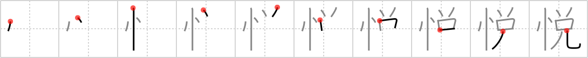

悦
← →
ecstasy

Reading:
On-Yomi: エツ — Kun-Yomi: よろこ.ぶ、よろこ.ばす
Heisig story:
State of mind . . . devil.
Koohii stories:
1) [ruuku35] 27-4-2006(189): ECSTASY alters our STATE OF MIND and makes us DEVILS.
2) [Raichu] 10-4-2008(82): The state of mind that horny teenagers are looking for.
3) [dingomick] 8-8-2007(43): The devil sells Data some ecstasy saying it will make him, like, human, man.
4) [kfmfe04] 24-9-2008(31): Someone offers you ecstasy at a rave party. Cool, logical Data is on one shoulder saying "No, don't take it!". The devil is on your other shoulder saying "You know you want it!".
5) [Doodsaq] 16-10-2007(17): Data was in a state of ecstasy on the holodeck when he loaded up the new program full of horny teenagers that he stole from Riker.